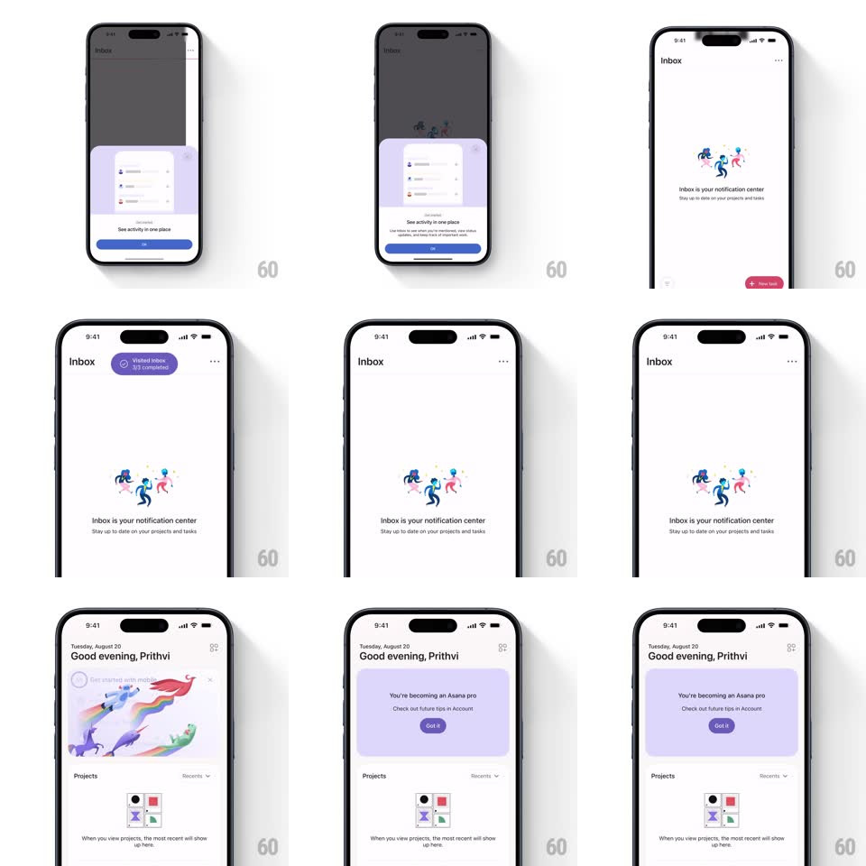

Media
Frame-by-frame

Rebuild this interaction 1:1: Asana's get-started checklist - completing a checkpoint fires a purple toast pill ("Visited inbox - 1/3 complete"), the checklist card morphs into a lavender "You're becoming an Asana pro" success card with a Got it button, and the card collapses away on dismissal.

Rebuild this interaction 1:1: Asana's get-started checklist - completing a checkpoint fires a purple toast pill ("Visited inbox - 1/3 complete"), the checklist card morphs into a lavender "You're becoming an Asana pro" success card with a Got it button, and the card collapses away on dismissal.
## Integration
Integration: stack-agnostic spec - springs given as stiffness/damping, timed motions as duration + curve; map every value to your framework and animation library of choice.
## Scene
Asana mobile home ("Good evening" header). A checklist card "Get started with mobile" with circle-checklist rows. Toast: small purple pill top-center with check icon and progress text. Success state: the card becomes a lavender panel with heading, subtext, and a purple Got it pill.
## Motion spec
Pattern: checklist progress toast + card-morph celebration.
- Completing a step off-screen: a purple pill slides down from under the nav bar (spring ~360/20, small overshoot), holds 2s, slides back up; the check icon inside draws itself (stroke, 250ms).
- Back on home: the checklist card's completed row checks itself with a springy circle fill (scale 0 -> 1.15 -> 1) and the row's text fades to gray with a strikethrough drawing left-to-right (250ms).
- On the final checkpoint: the card's content crossfades while the card itself expands a few points of padding (spring ~320/22) into the lavender success card - a confetti burst (12-16 particles, 700ms, gravity + drift) plays over it.
- Got it: the card collapses vertically (height to 0, 300ms ease-in), the list below sliding up to reclaim the space.
## Calibration
- Toast pill is compact and auto-dismissing - a checkpoint, not a modal.
- The card MORPHS in place - same container, new content and tint.
## Reduced motion
Toast fades; card crossfades; no confetti.
## Don't miss
- The success card reuses the checklist's footprint - no dialog, no navigation.
- Progress is always "n/3" - the denominator keeps the journey short-looking.